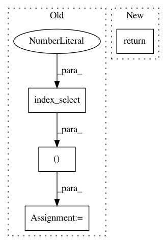

d502958b4d3356c19e217bee834167b99a945423,fairseq/models/lstm.py,LSTMEncoder,reorder_encoder_out,#LSTMEncoder#Any#Any#,285
Before Change
}
def reorder_encoder_out(self, encoder_out: Dict[str, Tuple[Tensor, Tensor, Tensor]], new_order):
encoder_out["encoder_out"] = (
encoder_out["encoder_out"][0].index_select(1, new_order),
encoder_out["encoder_out"][1].index_select(1, new_order),
encoder_out["encoder_out"][2].index_select(1, new_order))
if encoder_out["encoder_padding_mask"][0] is not None:
encoder_out["encoder_padding_mask"] = (
encoder_out["encoder_padding_mask"][0].index_select(1, new_order),
encoder_out["encoder_padding_mask"][1],
After Change
return out.view(self.num_layers, bsz, -1)
def reorder_encoder_out(self, encoder_out, new_order):
return tuple((
encoder_out[0].index_select(1, new_order),
encoder_out[1].index_select(1, new_order),
encoder_out[2].index_select(1, new_order),
encoder_out[3].index_select(1, new_order),
))
def max_positions(self):
Maximum input length supported by the encoder.
return self.max_source_positions
In pattern: SUPERPATTERN
Frequency: 3
Non-data size: 4
Instances
Project Name: pytorch/fairseq
Commit Name: d502958b4d3356c19e217bee834167b99a945423
Time: 2020-04-21
Author: myleott@fb.com
File Name: fairseq/models/lstm.py
Class Name: LSTMEncoder
Method Name: reorder_encoder_out
Project Name: rusty1s/pytorch_geometric
Commit Name: d8a075668b6e9cdf4c08f6c7285e5c7d2fbf5332
Time: 2017-10-17
Author: matthias.fey@tu-dortmund.de
File Name: torch_geometric/graph/geometry.py
Class Name:
Method Name: edges_from_faces
Project Name: rusty1s/pytorch_geometric
Commit Name: a9e209bcb857651fe0ee9416acffbf81e5610fe5
Time: 2019-06-04
Author: matthias.fey@tu-dortmund.de
File Name: torch_geometric/nn/conv/edge_conv.py
Class Name: EdgeConv
Method Name: forward